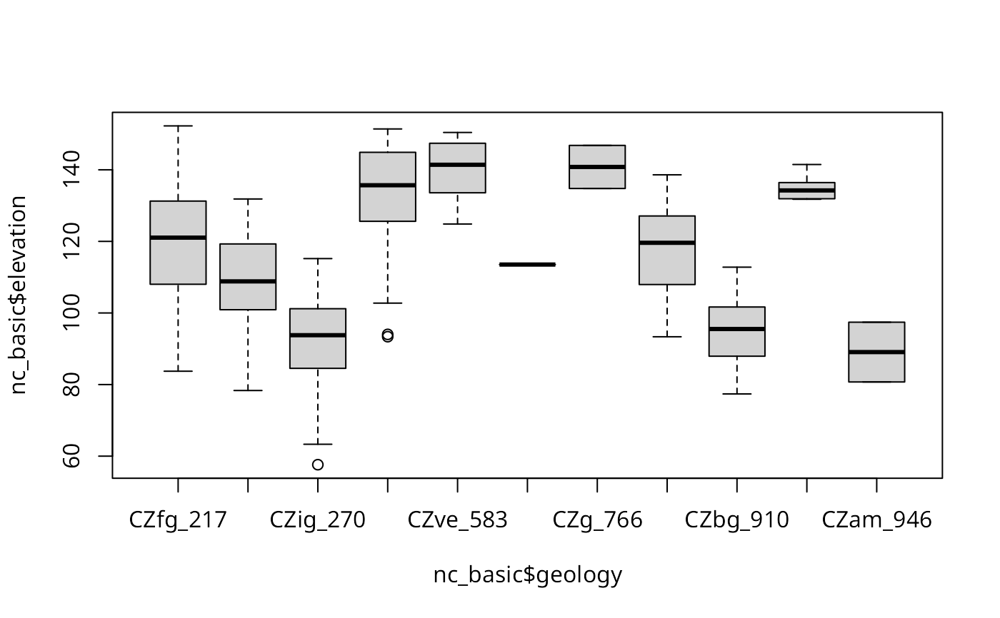

Read GRASS raster files from GRASS into R terra::SpatRaster or
sp::SpatialGridDataFrame objects, and write single columns of
terra::SpatRaster or sp::SpatialGridDataFrame
objects to GRASS. When return_format="terra", temporary binary files
and r.out.bin and r.in.bin are used for speed reasons. read_RAST() and
write_RAST() by default use "RRASTER" files written and read by
GDAL.
Usage
read_RAST(
vname,
cat = NULL,
NODATA = NULL,
return_format = "terra",
close_OK = return_format == "SGDF",
flags = NULL,
Sys_ignore.stdout = FALSE,
ignore.stderr = get.ignore.stderrOption()
)
write_RAST(
x,
vname,
zcol = 1,
NODATA = NULL,
flags = NULL,
ignore.stderr = get.ignore.stderrOption(),
overwrite = FALSE,
verbose = TRUE
)Arguments
- vname
A vector of GRASS raster file names in mapsets in the current search path, as set by "g.mapsets"; the file names may be given as fully-qualified map names using "name@mapset", in which case only the mapset given in the full path will be searched for the existence of the raster; if more than one raster with the same name is found in mapsets in the current search path, an error will occur, in which case the user should give the fully-qualified map name. If the fully-qualified name is used,
@will be replaced by underscore in the output object.- cat
default NULL; if not NULL, must be a logical vector matching vname, stating which (CELL) rasters to return as factor.
- NODATA
by default NULL, in which case it is set to one less than
floor()of the data values for FCELL rasters or the range maximum for CELL Byte, UInt16 and Uint32 rasters (with no negative values), and an attempt is made to set NODATA to the upper Int16 and Int32 range if the lower range is occupied; otherwise an integer NODATA value (required to be integer by GRASS r.out.bin).- return_format
default
terra, optionallySGDF.- close_OK
default TRUE - clean up possible open connections used for reading metadata; may be set to FALSE to avoid the side-effect of other user-opened connections being broken.
- flags
default NULL, character vector, for example
overwrite.- Sys_ignore.stdout
Passed to
system.- ignore.stderr
default taking the value set by
set.ignore.stderrOption; can be set to TRUE to silencesystem()output to standard error; does not apply on Windows platforms.- x
A terra
terra::SpatRasteror spsp::SpatialGridDataFrameobject,- zcol
Attribute column number or name,
- overwrite
default FALSE, if TRUE inserts "overwrite" into the value of the flags argument if not already there to allow existing GRASS rasters to be overwritten,
- verbose
default TRUE, report how writing to GRASS is specified,
Value
by default returns a SpatRaster object, but may return a legacy
SpatialGridDataFrame object if return_format="SGDF".
write_RAST silently returns the object being written to GRASS.
Author
Roger S. Bivand, e-mail: Roger.Bivand@nhh.no
Examples
# Run example only if GRASS settings file indicates that the
# nc_basic_spm_grass7 location is active
run <- FALSE
GISRC <- Sys.getenv("GISRC")
if (nchar(GISRC) > 0) {
location_name <- read.dcf(GISRC)[1, "LOCATION_NAME"]
if (location_name == "nc_basic_spm_grass7") {
run <- TRUE
}
}
# store original environment variables before modifying
GV <- Sys.getenv("GRASS_VERBOSE")
Sys.setenv("GRASS_VERBOSE" = 0)
original_ignore_stderr <- get.ignore.stderrOption()
set.ignore.stderrOption(TRUE)
#> [1] FALSE
if (run) {
# Retrieve GRASS metadata and creata a new mapset
meta <- gmeta()
location_path <- file.path(meta$GISDBASE, meta$LOCATION_NAME)
previous_mapset <- meta$MAPSET
example_mapset <- "RGRASS_EXAMPLES"
execGRASS("g.mapset", flags = "c", mapset = example_mapset)
}
if (run) {
# List available mapsets and raster maps
mapsets <- unlist(
strsplit(execGRASS("g.mapsets", flags = "p", intern = TRUE), " ")
)
print(mapsets)
}
#> [1] "RGRASS_EXAMPLES" "PERMANENT"
if (run) {
execGRASS("g.list", type = "raster", pattern = "soils", flags = "m",
intern = TRUE)
}
#> [1] "soils@PERMANENT"
if (run) {
execGRASS("g.list", type = "raster", pattern = "soils@PERMANENT",
mapset = ".", flags = "m", intern = TRUE)
}
#> character(0)
if (run) {
execGRASS("g.list", type = "raster", pattern = "soils",
mapset = "PERMANENT", flags = "m", intern = TRUE)
}
#> [1] "soils@PERMANENT"
# Read/write the GRASS "landuse" dataset as a SpatRaster
if (require("terra", quietly = TRUE)) {
if (run) {
v1 <- read_RAST("landuse", cat = TRUE, return_format = "terra")
print(v1)
print(inMemory(v1))
}
if (run) {
write_RAST(v1, "landuse1", flags = c("o", "overwrite"))
execGRASS("r.stats", flags = "c", input = "landuse1")
execGRASS("g.remove", flags = "f", name = "landuse1", type = "raster")
}
}
#> terra 1.8.5
#> class : SpatRaster
#> dimensions : 620, 1630, 1 (nrow, ncol, nlyr)
#> resolution : 500, 500 (x, y)
#> extent : 120000, 935000, 10000, 320000 (xmin, xmax, ymin, ymax)
#> coord. ref. : NAD83(HARN) / North Carolina (EPSG:3358)
#> source : file26e469d16b6a.grd
#> categories : label
#> name : label
#> min value : undefined
#> max value : sediment
#> [1] FALSE
#> SpatRaster read into GRASS using r.in.gdal from file
#> 1 226
#> 2 2
#> 3 81
#> 4 65
#> 5 415
#> 6 20
#> 7 1
#> * 1009790
# read the geology and elevation GRASS datasets as SpatialGridDataFrames
if (require("sp", quietly = TRUE)) {
if (run) {
nc_basic <- read_RAST(c("geology", "elevation"), cat = c(TRUE, FALSE),
return_format = "SGDF")
print(table(nc_basic$geology))
}
if (run) {
execGRASS("r.stats", flags = c("c", "l", "quiet"), input = "geology")
boxplot(nc_basic$elevation ~ nc_basic$geology)
}
if (run) {
# Compute square root of elevation and write back to GRASS
nc_basic$sqdem <- sqrt(nc_basic$elevation)
write_RAST(nc_basic, "sqdemSP", zcol = "sqdem",
flags = c("quiet", "overwrite"))
execGRASS("r.info", map = "sqdemSP")
}
if (run) {
# Read the new raster data and measure read times
print(system.time(
sqdemSP <- read_RAST(c("sqdemSP", "elevation"), return_format = "SGDF")
))
}
if (run) {
print(system.time(
sqdem <- read_RAST(c("sqdemSP", "elevation"), return_format = "terra"))
)
}
if (run) {
print(names(sqdem))
}
if (run) {
sqdem1 <- read_RAST(c("sqdemSP@RGRASS_EXAMPLES", "elevation@PERMANENT"))
print(names(sqdem1))
}
if (run) {
execGRASS("g.remove", flags = "f", name = "sqdemSP", type = "raster")
# GRASS r.mapcalc example
execGRASS("r.mapcalc", expression = "basins0 = basins - 1",
flags = "overwrite")
execGRASS("r.stats", flags = "c", input = "basins0")
}
if (run) {
basins0 <- read_RAST("basins0", return_format = "SGDF")
print(table(basins0$basins0))
execGRASS("g.remove", flags = "f", name = "basins0", type = "raster")
}
if (run) {
# Create and read a test raster
execGRASS("r.mapcalc", expression = "test_t = 66000",
flags = "overwrite")
execGRASS("r.info", flags = "r", map = "test_t", intern = TRUE)
tt <- read_RAST("test_t")
execGRASS("g.remove", flags = "f", name = "test_t", type = "raster")
}
}
#> Warning: non-unique category labels; category number appended
#>
#> CZfg_217 CZlg_262 CZig_270 CZbg_405 CZve_583 CZam_720 CZg_766 CZam_862
#> 292 78 277 102 8 1 2 25
#> CZbg_910 Km_921 CZam_946
#> 18 5 2
#> 217 CZfg 292
#> 262 CZlg 78
#> 270 CZig 277
#> 405 CZbg 102
#> 583 CZve 8
#> 720 CZam 1
#> 766 CZg 2
#> 862 CZam 25
#> 910 CZbg 18
#> 921 Km 5
#> 946 CZam 2
#> * no data 1009790

#> SpatialGridDataFrame read into GRASS using r.in.bin
#> +----------------------------------------------------------------------------+
#> | Map: sqdemSP Date: Fri Jan 3 15:04:43 2025 |
#> | Mapset: RGRASS_EXAMPLES Login of Creator: rsb |
#> | Project: nc_basic_spm_grass7 |
#> | DataBase: /home/rsb/topics/grassdata |
#> | Title: |
#> | Timestamp: none |
#> |----------------------------------------------------------------------------|
#> | |
#> | Type of Map: raster Number of Categories: 0 |
#> | Data Type: DCELL Semantic label: (none) |
#> | Rows: 620 |
#> | Columns: 1630 |
#> | Total Cells: 1010600 |
#> | Projection: Lambert Conformal Conic |
#> | N: 320000 S: 10000 Res: 500 |
#> | E: 935000 W: 120000 Res: 500 |
#> | Range of data: min = 7.59028829155237 max = 12.3394764902613 |
#> | |
#> | Data Description: |
#> | generated by r.in.bin |
#> | |
#> | Comments: |
#> | r.in.bin --overwrite --quiet -d input="/home/rsb/topics/grassdata/nc\ |
#> | _basic_spm_grass7/RGRASS_EXAMPLES/.tmp/localhost.localdomain/X834" o\ |
#> | utput="sqdemSP" bytes=8 header=0 bands=1 order="native" north=320000\ |
#> | south=10000 east=935000 west=120000 rows=620 cols=1630 anull=6 |
#> | |
#> +----------------------------------------------------------------------------+
#>
#> user system elapsed
#> 0.687 0.123 0.820
#> user system elapsed
#> 0.518 0.129 0.661
#> [1] "sqdemSP" "elevation"
#> [1] "sqdemSP_RGRASS_EXAMPLES" "elevation_PERMANENT"
#> 1 48
#> 3 31
#> 7 32
#> 9 5
#> 11 136
#> 13 22
#> 15 34
#> 17 12
#> 19 108
#> 21 38
#> 23 27
#> 25 35
#> 27 74
#> 29 22
#> * 1009976
#>
#> 1 3 7 9 11 13 15 17 19 21 23 25 27 29
#> 48 31 32 5 136 22 34 12 108 38 27 35 74 22
if (run) {
# Restore the previous mapset and clean up
execGRASS("g.mapset", mapset = previous_mapset)
if (example_mapset != previous_mapset) {
unlink(file.path(location_path, example_mapset), recursive = TRUE)
}
}
# Restore original GRASS settings
Sys.setenv("GRASS_VERBOSE" = GV)
set.ignore.stderrOption(original_ignore_stderr)
#> [1] TRUE